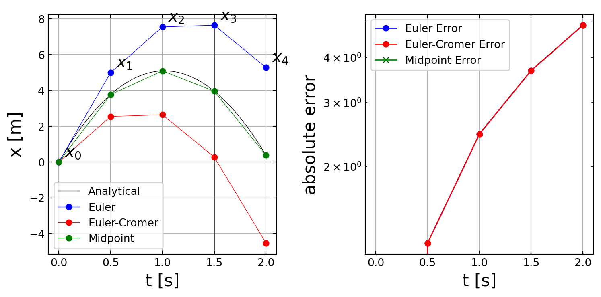

Solving ODEs
All the stuff we have defined in the previous sections is useful for solving ordinary differential equations. This will bring us closer to solving out physics problems now.
Harmonic Oscillator
Physics Interlude: The harmonic oscillator
We are going to tackle as a first very simple problem, the harmonic oscillator and we will demonstrate that with the matrix (Crank-Nicholson method or implicit scheme), the Euler type integration method and using some ‘unknown’ integrator in the module SciPy.
The equation of motion for a classical harmonic oscillator is given
\[\begin{equation} \frac{\mathrm{d}^2x}{\mathrm{d}t^2}+\omega^2 x=0 \end{equation}\]
This is a second order differential equation which requires for its solution two initial conditions. The first initial condition is the initial elongation \(x(t=0)=x_{0}\) and the second the initial velocity \(\dot{x}(t=0)=v_{0}\).
Implicit Solution - Crank Nicholson
Lets start with the matrix appraoch we have just learned about. Using the matrix version, we can transform the above equation into a system of coupled equations, which we can solve with some standard methods available from e.g. the SciPy module.
Define Matrices
Our matrix will consist of two parts. The first containing the second derivative and the second just the elongation. Suppose we want to calculate the position \(x(t)\) at 6 instances in time \(t_{i}\) then the matrix version of the second derivative reads as
(\(x_{1}=x(t_{1}), \ldots\)).
\(T=\frac{d^2x}{dt^2}=\frac{1}{\delta t^2} \begin{bmatrix} -2 & 1 & 0 & 0 & 0 & 0\\ 1 & -2 & 1 & 0 & 0 & 0\\ 0 & 1 & -2 & 1 & 0 & 0\\ 0 & 0 & 1 & -2 & 1 & 0\\ 0 & 0 & 0 & 1 & -2 & 1\\ 0 & 0 & 0 & 0 & 1 & -2\\ \end{bmatrix} \begin{bmatrix} x_{1}\\ x_{2}\\ x_{3}\\ x_{4}\\ x_{5}\\ x_{6} \end{bmatrix}\)
The second term in the equation of motion is a multiplication of the elongation \(x(t_{i})\) by \(\omega^{2}\) and can be written as
\(V=\omega^2 x=\begin{bmatrix} \omega^2 & 0 & 0 & 0 & 0 & 0\\ 0 & \omega^2 & 0 & 0 & 0 & 0\\ 0 & 0 & \omega^2 & 0 & 0 & 0\\ 0 & 0 & 0 & \omega^2 & 0 & 0\\ 0 & 0 & 0 & 0 & \omega^2 & 0\\ 0 & 0 & 0 & 0 & 0 & \omega^2 \\ \end{bmatrix} \begin{bmatrix} x_{1}\\ x_{2}\\ x_{3}\\ x_{4}\\ x_{5}\\ x_{6} \end{bmatrix}\)
The left hand side of the would threfore contain a sum of the two matrices \(M=T+V\) multiplied by the vector \(x\). We have therfore almost all things together to solve this differential equation with the help of an implicit scheme. What we have ignored so far are the initial conditions.
Use Initial Conditions
The matrix given for the second detivative actually implies already some initial (bounary) conditions. You probably noticed that the matrix contains incomplete coefficients for the second derivative in the first and last line. The first line contains \((-2,1)\), but the second derivative should contain \((1,-2,1)\). This \((-2,1)\) thus always includes the boundary condition that \(x_{0}=0\). To include our own initial/boundary conditions, we have to construct the matrix for the second derivative slightly differently and modify the differential equation to
\[\begin{equation} \frac{\mathrm{d}^2x}{\mathrm{d}t^2}+\omega^2 x=b \end{equation}\]
where the vector b takes care of the initial conditions.
If we have \(N\) positions in time at which we calculate the elongation \(x\), we have a \(N\times N\) matrix of for the second derivatives. The lower \(N-2\) lines will contain the the coefficients for the second derivative \((1,-2,1)\). The first two lines supply the initial/boundary conditions.
The initial condition for the elongation \(x(t=0)=x_{0}\) is obtained when the first element of the first line is a 1. The matrix multiplication \(M\, x=b\) for yields thus in the first line \(x_{1}=b_{1}\) and we set \(b_{1}=x_{0}\). The second line shall give the initial velocity. So the matrix entries of the second line contain a first derivative \((-1,1)\). The matrix multiplication thus yields \(x_{2}-x_{1}=b_{2}\). We can therefore need to set \(b_{2}=v_{0}\delta t\). All of the other entries of \(b\) shall be set to zero according to the differential equation of the harmonic oscillator.
Our final problem \(M\, x=b\) will thus have the following shape
\[\begin{equation} \begin{bmatrix} 1 & 0 & 0 & 0 & 0 & 0\\ -1 & 1 & 0 & 0 & 0 & 0\\ 1 & -2+\omega^2*\delta t^2 & 1 & 0 & 0 & 0\\ 0 & 1 & -2+\omega^2*\delta t^2 & 1 & 0 & 0\\ 0 & 0 & 1 & -2+\omega^2*\delta t^2 & 1 & 0\\ 0 & 0 & 0 & 1 & -2+\omega^2*\delta t^2 & 1\\ \end{bmatrix} \begin{bmatrix} x_{1}\\ x_{2}\\ x_{3}\\ x_{4}\\ x_{5}\\ x_{6} \end{bmatrix}= \begin{bmatrix} x_{0}\\ v_{0}\delta t\\ 0\\ 0\\ 0\\ 0 \end{bmatrix} \end{equation}\]
Solution
This is the final system of coupled equations which we can supply to any matrix solver. We will use a solver from the scipy.linalg module. Lets have a look at the details below.
N=10
(diags([-2., 1., 1.], [-1,-2, 0],
shape=(N, N))+diags([1], [-1], shape=(N, N))* omega**2*dt**2)Explicit Solution - Numerical Integration
Before implementing explicit numerical schemes, let’s develop a standardized approach for solving ODEs. This framework will allow us to solve different problems using various methods with minimal code modification.
Let’s examine the free fall problem as an example:
\[\begin{equation} \ddot{x}= -g \end{equation}\]
This second-order equation can be transformed into a system of two first-order equations:
\[\begin{eqnarray} \dot{x} &= v \\ \dot{v} &= -g \end{eqnarray}\]
Using the Euler method, these equations become:
\[\begin{eqnarray} x_{i+1} &= x_i + v_i \Delta t \\ v_{i+1} &= v_i - g\Delta t \end{eqnarray}\]
Note: The original equations had \(\dot{x}\) and \(\dot{v}\) in the right-hand side, which should be replaced with their actual values (\(v\) and \(-g\) respectively).
These equations can be written more compactly in vector form:
\[\begin{equation} \vec{y}_{i+1} = \vec{y}_i + \dot{\vec{y}}_i \Delta t \end{equation}\]
where
\[\begin{equation} \vec{y}= \begin{bmatrix} x \\ v \end{bmatrix} \end{equation}\]
and
\[\begin{equation} \dot{\vec{y}}= \begin{bmatrix} v \\ -g \end{bmatrix} \end{equation}\]
This vector formulation allows us to separate: 1. Problem definition (specifying \(\dot{\vec{y}}\) as a function of \(\vec{y}\) and \(t\)) 2. Solution method (implementing the numerical integration scheme)
We’ll explore three numerical methods:
- Euler Method: First-order accurate
- Euler-Cromer Method: Modified Euler method, better for oscillatory systems
- Midpoint Method: Second-order accurate
More sophisticated methods like the Runge-Kutta family offer higher accuracy but are not covered here.
Euler Method
The Euler method is derived from the Taylor expansion of the solution \(\vec{y}(t)\) around the current time \(t\):
\[\begin{equation} \vec{y}(t+\Delta t)=\vec{y}(t)+\dot{\vec{y}}(t)\Delta t+\frac{1}{2}\ddot{\vec{y}}(t)\Delta t^{2}+ \mathcal{O}(\Delta t^3) \end{equation}\]
The Euler method approximates this by truncating after the first-order term:
\[\begin{equation} \vec{y}(t+\Delta t) \approx \vec{y}(t) + \dot{\vec{y}}(t) \Delta t \end{equation}\]
For our free fall example, this becomes:
\[\begin{equation} \begin{bmatrix} x_{i+1} \\ v_{i+1} \end{bmatrix} = \begin{bmatrix} x_i \\ v_i \end{bmatrix} + \begin{bmatrix} v_i \\ -g \end{bmatrix} \Delta t \end{equation}\]
Error Analysis: The method has two distinct types of errors. The local truncation error, which represents the error made in a single step, is of order \(\mathcal{O}(\Delta t^2)\). This corresponds to the first term omitted in the Taylor expansion. The global truncation error, which accumulates over the entire integration interval \([0,\tau]\), is of order \(\mathcal{O}(\Delta t)\). This can be understood by considering that we take \(N = \tau/\Delta t\) steps, each contributing an error proportional to \(\Delta t^2\). The total error thus scales as \(N \cdot \Delta t^2 = \tau \Delta t\).
Limitations and Extensions: The method is directly applicable only to first-order systems of the form \(\dot{\vec{y}} = \vec{f}(\vec{y},t)\). However, this is not a fundamental limitation as higher-order equations can be converted to systems of first-order equations. For example, a second-order equation \(\ddot{x} = f(x,\dot{x},t)\) can be transformed into a system of two first-order equations by introducing the velocity as an additional variable. The resulting system becomes:
\[\begin{equation} \begin{bmatrix} \dot{x} \\ \dot{v} \end{bmatrix} = \begin{bmatrix} v \\ f(x,v,t) \end{bmatrix} \end{equation}\]
This transformation allows us to apply the method to a wider class of problems while maintaining its fundamental characteristics.
Euler-Cromer Method
The Euler-Cromer method (also known as the semi-implicit Euler method) modifies the basic Euler method by using the updated velocity when calculating the position. For a system described by position and velocity:
\[\begin{equation} \begin{aligned} \dot{x} &= v \\ \dot{v} &= f(x,v,t) \end{aligned} \end{equation}\]
The integration steps are:
\[\begin{equation} \begin{aligned} v_{i+1} &= v_i + f(x_i,v_i,t_i)\Delta t \\ x_{i+1} &= x_i + v_{i+1}\Delta t \end{aligned} \end{equation}\]
For our free fall example: \[\begin{equation} \begin{aligned} v_{i+1} &= v_i - g\Delta t \\ x_{i+1} &= x_i + v_{i+1}\Delta t \end{aligned} \end{equation}\]
Energy Behavior: The method shows improved energy conservation for oscillatory systems compared to the standard Euler method. While the Euler method typically increases energy over time, the Euler-Cromer method exhibits small energy oscillations around the correct value.
Error Analysis: The method maintains a local truncation error of \(\mathcal{O}(\Delta t^2)\) and a global truncation error of \(\mathcal{O}(\Delta t)\). Despite having the same order of accuracy as the Euler method, it provides more stable solutions for oscillatory systems.
Advantages: The Euler-Cromer method represents a simple modification of the Euler method that achieves better stability for oscillatory systems without requiring additional function evaluations.
Limitations: The method remains first-order accurate globally and is not symmetric in time. While it performs well for certain types of problems, particularly oscillatory systems, it may not be suitable for all differential equations.
Comparison with Euler Method:
# Euler Method
v[i+1] = v[i] + f(x[i],v[i],t[i])*dt
x[i+1] = x[i] + v[i]*dt # Uses old velocity
# Euler-Cromer Method
v[i+1] = v[i] + f(x[i],v[i],t[i])*dt
x[i+1] = x[i] + v[i+1]*dt # Uses new velocityMidpoint Method
The Midpoint Method (also known as the second-order Runge-Kutta method) improves upon both the Euler and Euler-Cromer methods by using the average of the derivatives at the current point and an estimated midpoint.
For a system of first-order differential equations:
\[\begin{equation} \dot{\vec{y}} = \vec{f}(\vec{y},t) \end{equation}\]
The algorithm proceeds in two steps:
Calculate an intermediate point using an Euler step to the midpoint: \[\begin{equation} \vec{k}_1 = \vec{f}(\vec{y}_i,t_i) \end{equation}\] \[\begin{equation} \vec{y}_{i+1/2} = \vec{y}_i + \frac{\Delta t}{2}\vec{k}_1 \end{equation}\]
Use the derivative at this midpoint for the full step: \[\begin{equation} \vec{k}_2 = \vec{f}(\vec{y}_{i+1/2},t_i+\Delta t/2) \end{equation}\] \[\begin{equation} \vec{y}_{i+1} = \vec{y}_i + \Delta t\vec{k}_2 \end{equation}\]
For our free fall example, this becomes:
\[\begin{equation} \begin{aligned} v_{i+1/2} &= v_i - \frac{g\Delta t}{2} \\ x_{i+1/2} &= x_i + v_i\frac{\Delta t}{2} \\ v_{i+1} &= v_i - g\Delta t \\ x_{i+1} &= x_i + v_{i+1/2}\Delta t \end{aligned} \end{equation}\]
Error Analysis: The method achieves higher accuracy than both Euler and Euler-Cromer methods with:
- Local truncation error: \(\mathcal{O}(\Delta t^3)\)
- Global truncation error: \(\mathcal{O}(\Delta t^2)\)
Implementation:
def midpoint_step(y, t, dt, f):
# Calculate k1
k1 = f(y, t)
# Calculate midpoint
y_mid = y + 0.5 * dt * k1
# Calculate k2 at midpoint
k2 = f(y_mid, t + 0.5*dt)
# Full step using midpoint derivative
return y + dt * k2Putting it all together
Now we can implement our numerical solution by combining our understanding of both the physical system and numerical methods. This implementation consists of two main parts: defining the differential equation and solving it numerically.
The Definition of the Problem
For the simple harmonic oscillator, we start with the second-order differential equation:
\[\begin{equation} \frac{d^2x}{dt^2} + \omega^2x = 0 \end{equation}\]
To solve this numerically, we convert it to a system of first-order equations using our state vector \(\vec{y} = [x, v]^T\):
\[\begin{equation} \frac{d}{dt}\begin{bmatrix} x \\ v \end{bmatrix} = \begin{bmatrix} v \\ -\omega^2x \end{bmatrix} \end{equation}\]
This is implemented as: ~~~ def SHO(state, time): ““” Define the harmonic oscillator system. state[0] : position x state[1] : velocity v returns : [dx/dt, dv/dt] ““” g0 = state[1] # dx/dt = v g1 = -k/m*state[0] # dv/dt = -ω²x return np.array([g0, g1]) ~~~
This function defines our physical system by returning the derivatives of our state variables at any given point.
Solving the Problem
With our system defined, we can implement the numerical solution using Euler’s method. The basic algorithm takes the current state and advances it by one time step:
def euler(y, t, dt, derivs):
"""
Perform one step of the Euler method.
y : current state [x, v]
t : current time
dt : time step
derivs : function returning derivatives
"""
y_next = y + derivs(y, t) * dt
return y_nextThis simple structure allows us to solve different physical problems by just changing the derivative function. For example, we can solve the free fall problem with initial conditions \(x_0=0\) and \(v_0=10\), or the harmonic oscillator with specified spring constant \(k\) and mass \(m\).
The key advantage of this structure lies in its flexibility. We can change the physical system by providing a different derivative function, implement various numerical methods by modifying the integration step, and explore the system behavior by adjusting parameters and initial conditions. This modular approach allows us to study a wide range of physical systems using the same basic numerical framework.
Solving the Harmonic Oscillator with SciPy
Having explored basic numerical integration methods, we can now utilize more sophisticated tools available in SciPy. The scipy.integrate.odeint() function provides a robust and accurate integration method with several advantages over our simple implementations.
To use SciPy’s integrator:
from scipy.integrate import odeintThe basic syntax is:
solution = odeint(derivative_function, initial_conditions, time_points)where:
derivative_functiondefines the system (like ourSHOfunction)initial_conditionsis a vector containing \([x_0, v_0]\)time_pointsis an array of times at which to compute the solution
The odeint function offers several significant advantages over our simple implementations. It features adaptive step size control, which automatically adjusts the integration step size based on the local error. The function performs continuous error estimation and correction to maintain accuracy throughout the integration. It also provides various integration methods that can be selected based on the problem’s requirements. The function is capable of handling stiff equations, which are particularly challenging for simpler methods, and generally provides better numerical stability across a wide range of problems.
For example, to solve the harmonic oscillator:
def SHO(state, t, k=1.0, m=1.0):
x, v = state
return [v, -k/m * x]
# Initial conditions
y0 = [1.0, 0.0] # x₀ = 1, v₀ = 0
t = np.linspace(0, 10, 1000)
# Solve the system
solution = odeint(SHO, y0, t)The solution array contains:
solution[:, 0]: position valuessolution[:, 1]: velocity values
Having understood the fundamentals of numerical integration through our implementations of Euler and other methods, we can now confidently use this more sophisticated tool for solving differential equations more accurately and efficiently.
Setup
Definition
Solution
Plotting
Damped Driven Pendulum in SciPy
Write a derivs function for a damped driven pendulum:
\[\begin{equation} \ddot{\theta}=-\frac{g}{L}\sin(\theta)-b \dot{\theta}+\beta\cos(\omega t) \end{equation}\]
Use this derivs function with the SciPy solver and plot the result for different parameters. Vary the damping parameter \(b\). Observe the contributions of the homogeneous and the particular solution. Plot the amplitude of the stationary solution as a function of frequency!